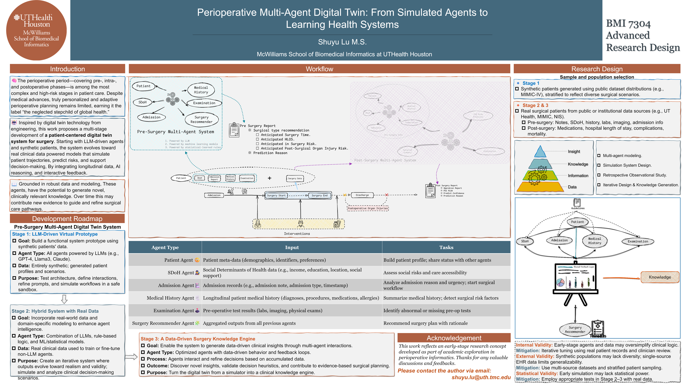

Perioperative Multi-Agent Digital Twin: From Simulated Agents to Learning Health Systems
Shuyu Lu · BMI 7304 Advanced Research Design
Early-stage research concept developed for coursework. The staged roadmap describes proposed work, not an implemented or clinically validated system.
This poster explores how specialized agents could organize clinical information and support perioperative simulation. The proposed roadmap begins with synthetic patient scenarios and then considers hybrid models using real clinical data.


Rendered from the author-provided PowerPoint poster. Original poster content and acknowledgements are retained. Open the full-resolution image to read the figures and references.
← Back to Shuyu Lu's website